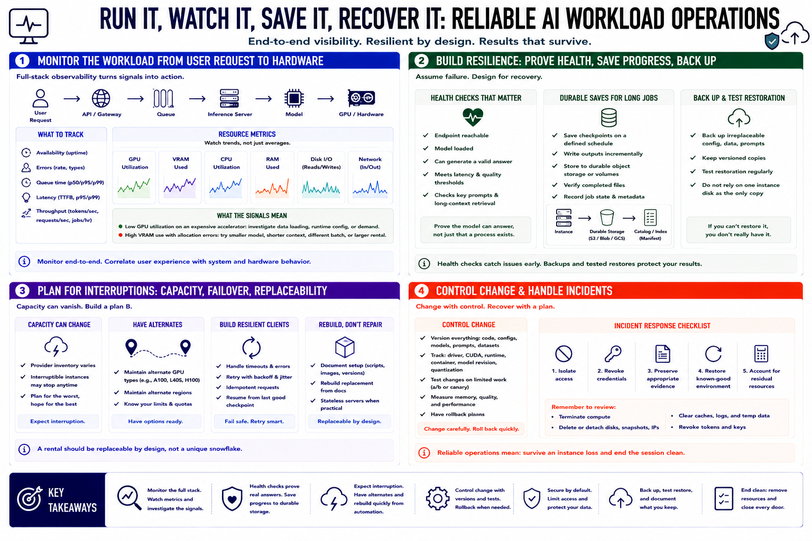

Operations and Reliability
Connecting to LMS... Progress: in progress

Narration
Monitor the workload from user request to hardware. Track availability, errors, queue time, latency, and throughput alongside GPU utilization, VRAM, CPU, RAM, disk, and network use. Low utilization on an expensive accelerator is a signal to investigate data loading, runtime configuration, or demand. High VRAM use with allocation errors may require a smaller model, shorter context, different batch, or larger rental.
Health checks should prove that the model can answer, not merely that a process exists. For longer jobs, save checkpoints and outputs to durable storage on a defined schedule. Back up irreplaceable configuration and data, then test restoration. Do not rely on one instance disk as the only copy of completed work.
Provider capacity can disappear between sessions, and interruptible machines may stop during a run. Maintain an acceptable alternate GPU type or region when deadlines matter. Design clients to handle transient failure and retries safely. Rebuild a replacement from documented scripts or images rather than repairing a unique machine indefinitely. A rental should be replaceable by design.
Control change with versioned configurations and rollback plans. A new driver, container, runtime, model revision, or quantization can change memory use, output, and performance. Test changes on limited work before adopting them. During an incident, isolate access, revoke credentials, preserve appropriate evidence, restore a known-good environment, and account for residual resources. Reliable rental operations mean the job can survive an instance loss and the team can end the session without losing results or leaving exposure behind.